Authentication
One of the very first things you will want to do is to provide users with a unique experience. For our example task list application, this could be as simple as providing a task list for the user who is logged in. In more complex applications, this is the gateway to role-based access controls, group rules, and sharing with your friends. In all these cases, properly identifying the user using the phone is the starting point.
Concepts
Authentication provides a process by which the user that is using the mobile device can be identified securely. This is generally done by entering a username and password. However, modern systems can also provide multi-factor authentication, send you a text message to a registered device, or use your fingerprint as the password.
The OAuth Process
In just about every single mobile application, a process called OAuth is used to properly identify a user to the mobile backend. OAuth is not an authentication mechanism in its own right. It is used to route the authentication request to the right place and to verify that the authentication took place. There are three actors in the OAuth protocol:
- The Client is the application attempting to get access to the resource.
- The Resource is the mobile backend that the client is attempting to access.
- The Identity Provider (or IdP) is the service that is responsible for authenticating the client.
At the end of the process, a cryptographically signed token is minted. This token is added to every single subsequent request to identify the user.
Server Side vs. Client Side Authentication
There are two types of authentication flow: Server-Flow and Client-Flow. They are so named because of who controls the flow of the actual authentication.

Server-flow is named because the authentication flow is managed by the server through a web connection. It is generally used in two cases:
- You want a simple placeholder for authentication in your mobile app while you are developing other code.
- You are developing a web app.
In the case of Server Flow:
- The client brings up a web view and asks for the login page from the resource.
- The resource redirects the client to the identity provider.
- The identity provider does the authentication before redirecting the client back to the resource (with an identity provider token).
- The resource validates the identity provider token with the identity provider.
- Finally, the resource mints a new resource token that it returns to the client.
Client-flow authentication uses an IdP provided SDK to integrate a more native feel to the authentication flow. The actual flow happens on the client, communicating only with the IdP.
- The client uses the IdP SDK to communicate with the identity provider.
- The identity provider does the authentication, returning an identity provider token.
- The client presents the identity provider token to the resource.
- The resource validates the identity provider token with the identity provider.
- Finally, the resource mints a new resource token that it returns to the client.
For example, if you use the Facebook SDK for authentication, your app will seamlessly switch over into the Facebook app and ask you to authorize your client application before switching you back to your client application.
It is generally recommended that you use the IdP SDK when developing an app that will be released on the app store. This follows the best practice provided by the majority of identity providers and provides the best experience for your end users.
Authentication Providers
Azure Mobile Apps supports five identity providers natively:
- Azure Active Directory
- Microsoft (MSA)
In addition, you can set up client-flow custom authentication that allows you to mint a ZUMO token to your specifications for any provider using a client-flow. For example, you could use authentication providers like Azure AD B2C, LinkedIn or GitHub, a third-party authentication provider like Auth0, or you could set up an identity table in your database so that you can check username and password without an identity provider.
Adding Authentication to a Mobile Backend
The Azure App Service Authentication / Authorization service integrates seamlessly into an Azure Mobile Apps backend as a piece of middleware that fills in the Identity information for ASP.NET. That means the only thing we have to worry about is authorization. The authentication piece (determining that a user is who they say they are) is already taken care of.
Authorization (which is the determination of whether an authenticated user can use a specific API) can happen at either the controller level or an individual operation level. We can add authorization to an entire table controller by adding the [Authorize] attribute to the table controller. For example, here is our table controller from the first chapter with authorization required for all operations:
using System.Linq;
using System.Threading.Tasks;
using System.Web.Http;
using System.Web.Http.Controllers;
using System.Web.Http.OData;
using Backend.DataObjects;
using Backend.Models;
using Microsoft.Azure.Mobile.Server;
namespace Backend.Controllers
{
[Authorize]
public class TodoItemController : TableController<TodoItem>
{
protected override void Initialize(HttpControllerContext controllerContext)
{
base.Initialize(controllerContext);
MobileServiceContext context = new MobileServiceContext();
DomainManager = new EntityDomainManager<TodoItem>(context, Request);
}
// GET tables/TodoItem
public IQueryable<TodoItem> GetAllTodoItems() => Query();
// GET tables/TodoItem/48D68C86-6EA6-4C25-AA33-223FC9A27959
public SingleResult<TodoItem> GetTodoItem(string id) => Lookup(id);
// PATCH tables/TodoItem/48D68C86-6EA6-4C25-AA33-223FC9A27959
public Task<TodoItem> PatchTodoItem(string id, Delta<TodoItem> patch) => UpdateAsync(id, patch);
// POST tables/TodoItem
public async Task<IHttpActionResult> PostTodoItem(TodoItem item)
{
TodoItem current = await InsertAsync(item);
return CreatedAtRoute("Tables", new { id = current.Id }, current);
}
// DELETE tables/TodoItem/48D68C86-6EA6-4C25-AA33-223FC9A27959
public Task DeleteTodoItem(string id) => DeleteAsync(id);
}
}
Authorization can also happen on a per-operation basis by adding the [Authorize] attribute to a single method within the table controller. For example, instead of requiring authorization on the entire table, we want a version where reading was possible anonymously but updating the database required authentication:
using System.Linq;
using System.Threading.Tasks;
using System.Web.Http;
using System.Web.Http.Controllers;
using System.Web.Http.OData;
using Backend.DataObjects;
using Backend.Models;
using Microsoft.Azure.Mobile.Server;
namespace Backend.Controllers
{
public class TodoItemController : TableController<TodoItem>
{
protected override void Initialize(HttpControllerContext controllerContext)
{
base.Initialize(controllerContext);
MobileServiceContext context = new MobileServiceContext();
DomainManager = new EntityDomainManager<TodoItem>(context, Request);
}
// GET tables/TodoItem
public IQueryable<TodoItem> GetAllTodoItems() => Query();
// GET tables/TodoItem/48D68C86-6EA6-4C25-AA33-223FC9A27959
public SingleResult<TodoItem> GetTodoItem(string id) => Lookup(id);
// PATCH tables/TodoItem/48D68C86-6EA6-4C25-AA33-223FC9A27959
[Authorize]
public Task<TodoItem> PatchTodoItem(string id, Delta<TodoItem> patch) => UpdateAsync(id, patch);
// POST tables/TodoItem
[Authorize]
public async Task<IHttpActionResult> PostTodoItem(TodoItem item)
{
TodoItem current = await InsertAsync(item);
return CreatedAtRoute("Tables", new { id = current.Id }, current);
}
// DELETE tables/TodoItem/48D68C86-6EA6-4C25-AA33-223FC9A27959
[Authorize]
public Task DeleteTodoItem(string id) => DeleteAsync(id);
}
}
Note that the [Authorize] attribute can do much more than what is provided here. Underneath there are various parameters that you can adjust to see if the user belongs to a specific group or role. However, the token that is checked to see if the user is authenticated does not pull in any of the other information that is normally needed for such authorization tasks. As a result, the [Authorize] tags is really only checking whether a request requires authentication or not.
Configuring an Authentication Provider
Configuration of the identity provider is very dependent on the identity provider and whether the client is using a client-flow or server-flow. Choose one of the several options for authentication:
- Enterprise Authentication covers Azure Active Directory.
- Social Authentication covers Facebook, Google, Microsoft and Twitter.
We can also configure authentication using custom routes. This allows us to use other (non-supported) services or to completely customize our flow (for example, to use an existing identity database).
Enterprise Authentication
Enterprise Authentication is handled by Azure Active Directory, which is fairly commonly configured within Azure. Every Azure subscription has a default directory associated with it that you can leverage for this section. In addition, if your organization has an Office 365 subscription, this will likely be tied to an Azure Active Directory domain to allow enterprise sign-in. In either case, you have a directory you can use for providing authentication to your app.
In general, you will need to get special permissions to update the directory. If you want to use your organizations corporate directory, then you are likely to have to get your IT department involved to set it up.
Azure Active Directory: Server-Flow setup
The Azure Active Directory server-flow is perhaps the easiest of all the authentication methods to configure. No matter if you are doing a client flow or server flow, you need to set up the server flow first.
We recommend that you implement Client Flow in any non-trivial application.
If you are using your default directory and you want to add a couple of test users, you will need to set those up first. Start by going to the Classic Azure Portal:
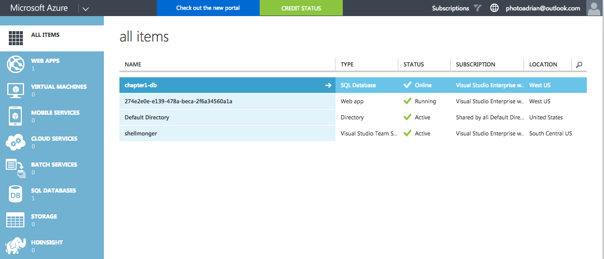
Click on the Default Directory, then click on USERS. You will notice that your Azure-linked ID is already present.

Click on Add User at the bottom of the screen. Enter a username in the box provided before clicking on the arrow. Then fill in the personal information and click on the arrow again. Finally, click on create. Note the password, before clicking on the tick. Now you have two users - your Azure ID and the one you just created. Note the username. It is based on the tenant, so it will be something like adrian@photoadrianoutlook.onmicrosoft.com.
To configure your app, switch back to the regular Azure Portal, find your App Service, click on All Settings followed by Authentication / Authorization. Finally, select Azure Active Directory.
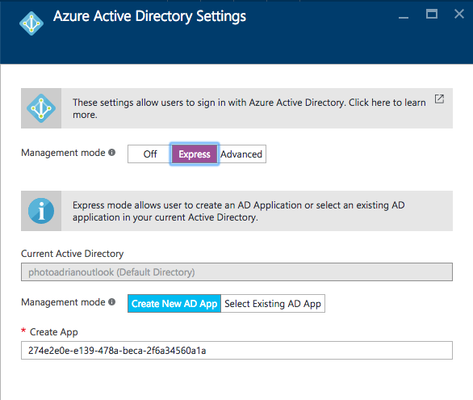
Click on Express. Note that all the information is filled in for you. All you have to do is click on OK, followed by Save.
Make sure you create the app service in the right directory / subscription. If you have access to more than one directory, you can choose the right one by selecting it under your account drop-down in the top-right corner.
There is also an Advanced track. This is used in client-flow situations and in situations where you have more than one directory. The Express flow is great for getting started quickly.
You can walk through a server-flow authentication to test that you have all the settings correct. Point your browser at https://yoursite.azurewebsites.net/.auth/login/aad. The browser will take you through an authentication flow before giving you a successful authentication image:

Adding Authentication to a Mobile Client
Now that the backend is completely configured, we can move our attention to the mobile client. We are going to be using the same mobile client that we developed in the first chapter, but we are now going to add authentication to it. Web views are one of those items that are platform dependent. Fortunately for us, Xamarin has already thought of this and provided a facility for running platform specific code called the DependencyService.
If we run our application right now, clicking on the "Enter the App" button will result in an error. You will be able to see the Unauthorized error in the debug window of Visual Studio.
Our first step is to define an Abstractions\ILoginProvider.cs interface within the shared project:
using Microsoft.WindowsAzure.MobileServices;
using System.Threading.Tasks;
namespace TaskList.Abstractions
{
public interface ILoginProvider
{
Task LoginAsync(MobileServiceClient client);
}
}
Next, we are going to extend our Abstractions\ICloudService.cs interface so that the main application can call the login routine:
using System.Threading.Tasks;
namespace TaskList.Abstractions
{
public interface ICloudService
{
ICloudTable<T> GetTable<T>() where T : TableData;
Task LoginAsync();
}
}
Our code will call LoginAsync() in the ICloudService, which will get the platform-specific version of the login provider and call LoginAsync() there, but with our defined mobile service client. That is defined in the Services\AzureCloudService.cs class:
using System.Threading.Tasks;
using Microsoft.WindowsAzure.MobileServices;
using TaskList.Abstractions;
using TaskList.Helpers;
using Xamarin.Forms;
namespace TaskList.Services
{
public class AzureCloudService : ICloudService
{
MobileServiceClient client;
public AzureCloudService()
{
client = new MobileServiceClient(Locations.AppServiceUrl);
}
public ICloudTable<T> GetTable<T>() where T : TableData => new AzureCloudTable<T>(client);
public Task LoginAsync()
{
var loginProvider = DependencyService.Get<ILoginProvider>();
return loginProvider.LoginAsync(client);
}
}
}
The method looks up the platform dependent version of the login provider and executes the login method, passing along the client (which we will need later).
In each platform-specific project, we are going to define a concrete implementation of the login provider that uses a web view to hold the actual authentication flow. Here is the droid Services\DroidLoginProvider.cs (in the TaskList.Droid project):
using System.Threading.Tasks;
using Android.Content;
using Microsoft.WindowsAzure.MobileServices;
using TaskList.Abstractions;
using TaskList.Droid.Services;
[assembly: Xamarin.Forms.Dependency(typeof(DroidLoginProvider))]
namespace TaskList.Droid.Services
{
public class DroidLoginProvider : ILoginProvider
{
Context context;
public void Init(Context context)
{
this.context = context;
}
public async Task LoginAsync(MobileServiceClient client)
{
await client.LoginAsync(context, "aad");
}
}
}
Let us take a closer look at this implementation. The LoginAsync() method on the Azure Mobile Apps client object takes the Android context (which is normally the main window) and a provider - we can pick any of "facebook", "google", "microsoftaccount", "twitter" or "aad" depending on what we have defined in the Azure App Service. The clever piece is the Xamarin.Forms.Dependency call at the top - that registers the class as a platform service so we can access it through the Xamarin dependency service.
Note that we need an extra initialization routine for Android that must be called prior the login provider being called to pass along the main window of the app (also known as the context). This is done in the MainActivity.cs file after the Xamarin Forms initialization call. The dependency service is not set up until after the Xamarin Forms library is initialized, so we will not be able to get the login provider reference before that point:
protected override void OnCreate(Bundle bundle)
{
base.OnCreate(bundle);
Microsoft.WindowsAzure.MobileServices.CurrentPlatform.Init();
global::Xamarin.Forms.Forms.Init(this, bundle);
((DroidLoginProvider)DependencyService.Get<ILoginProvider>()).Init(this);
LoadApplication(new App());
}
iOS is similar, but does not require the initialization step in the main startup class. The login provider class is in Services\iOSLoginProvider.cs (in the TaskList.iOS project):
using System.Threading.Tasks;
using Microsoft.WindowsAzure.MobileServices;
using TaskList.Abstractions;
using TaskList.iOS.Services;
using UIKit;
[assembly: Xamarin.Forms.Dependency(typeof(iOSLoginProvider))]
namespace TaskList.iOS.Services
{
public class iOSLoginProvider : ILoginProvider
{
public async Task LoginAsync(MobileServiceClient client)
{
await client.LoginAsync(RootView, "aad");
}
public UIViewController RootView => UIApplication.SharedApplication.KeyWindow.RootViewController;
}
}
Note that we are using the same pattern here for registering the concrete implementation with the dependency service, so we can get it the same way. Finally, here is the UWP Services\UWPLoginProvider.cs (in the TaskList.UWP project):
using System.Threading.Tasks;
using Microsoft.WindowsAzure.MobileServices;
using TaskList.Abstractions;
using TaskList.UWP.Services;
[assembly: Xamarin.Forms.Dependency(typeof(UWPLoginProvider))]
namespace TaskList.UWP.Services
{
public class UWPLoginProvider : ILoginProvider
{
public async Task LoginAsync(MobileServiceClient client)
{
await client.LoginAsync("aad");
}
}
}
Now that we have all the platform-specific login routines registered, we can move on to adding the login routine to the UI. We have already got a button on the entry page to enter the app. It makes sense to wire up that button so that it logs us in as well. The Command for the login button is in the ViewModels\EntryPageViewModel.cs:
async Task ExecuteLoginCommand()
{
if (IsBusy)
return;
IsBusy = true;
try
{
var cloudService = ServiceLocator.Instance.Resolve<ICloudService>();
await cloudService.LoginAsync();
Application.Current.MainPage = new NavigationPage(new Pages.TaskList());
}
catch (Exception ex)
{
Debug.WriteLine($"[ExecuteLoginCommand] Error = {ex.Message}");
}
finally
{
IsBusy = false;
}
}
The
ServiceLocatorclass is my basic singleton handler. It is available in the Chapter2 project. It returns the concrete version of the cloud service, just like the Singleton version we defined in Chapter1.
When you run the application, clicking on the "Enter the App" button will now present you with an Authenticate window:

Going through the authentication process will get you to the task list again. If the authentication process fails, then LoginAsync() will throw an error, which is caught at the ViewModel. Right now, the EntryPageViewModel does nothing more than print a diagnostic message to the debug window of Visual Studio.
Azure Active Directory: Client-Flow Setup
Configuring Azure Active Directory for client-flow is a three-step process. First, we need to create a WEB application. This represents the resource: in our case, the resource is the Azure Mobile Apps backend. Then we need to create a NATIVE application. This represents the client: in our case, the ADAL (Active Directory Access Library) library will need this information. Finally, we need to give the NATIVE application permission to access the WEB application.
It starts with configuring a server-flow to protect the resource. We've already done that above. Then configure a "Native Application" and give it permissions to the web application:
- Log on to the Classic Portal.
- Select the Default Directory from your list of all items.
- Click on the APPLICATIONS tab.
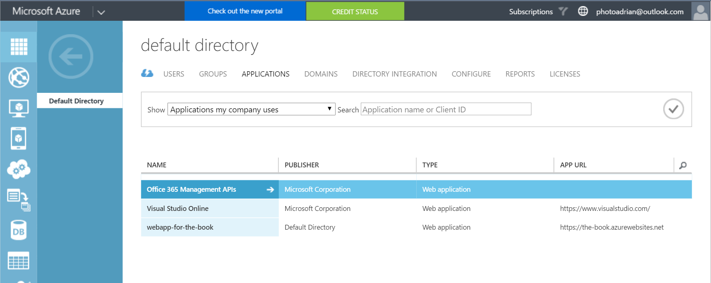
- Note that our existing web application is already there. You will see more applications, depending on what you have set up. In this example, I have Visual Studio Team Services and Office 365 set up.
- Click on the ADD button at the bottom of the page.

- Click on Add an application my organization is developing.
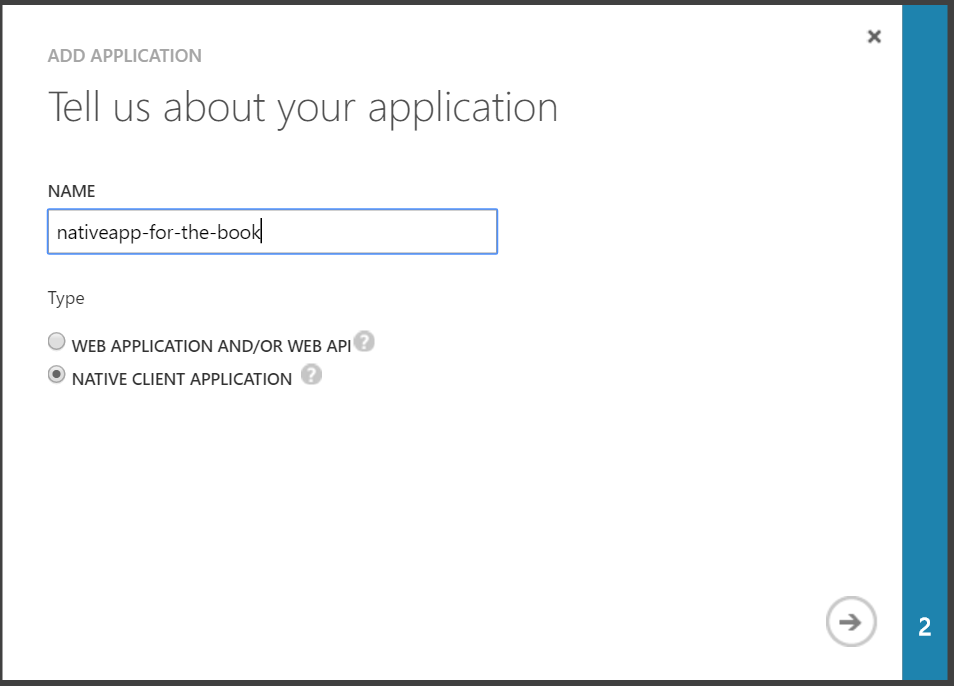
- Enter a name for the app registration, and select NATIVE CLIENT APPLICATION.
- Click on the Next arrow.
- Enter a valid URI - it can be anything, but it has to be valid
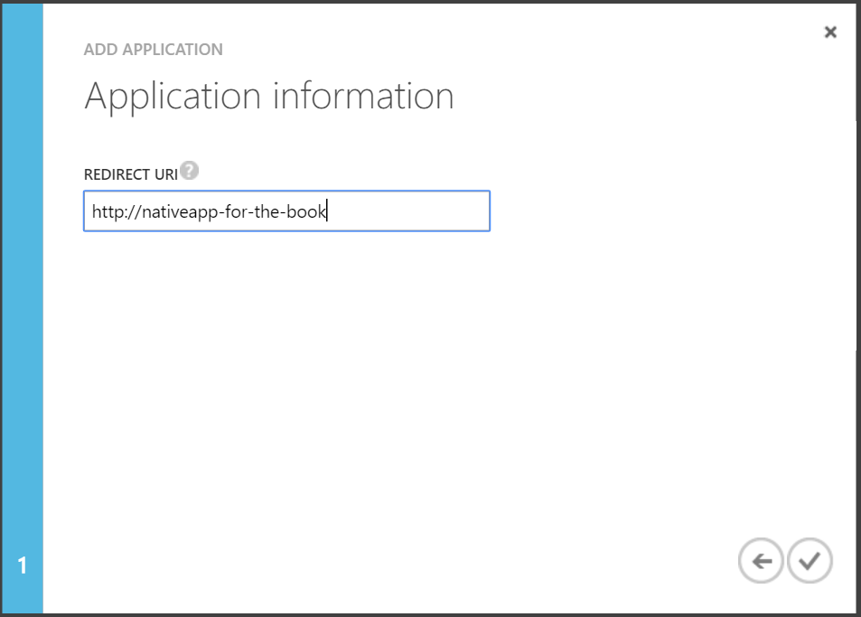
- Click on the tick to create the application.
- The wizard will close, but you will be brought to the app configuration. Click on the CONFIGURE tab.

- Add a Redirect URI of the form:
https://yoursite.azurewebsites.net/.auth/login/done.

- At the bottom of the page is the permissions to other applications section. Click on the Add application button.

- Click on the SHOW drop-down and select All Apps, then click on the tick next to the search box.
- Click on the web application that you set up during the server-flow configuration, then click on the tick in the lower-right corner.
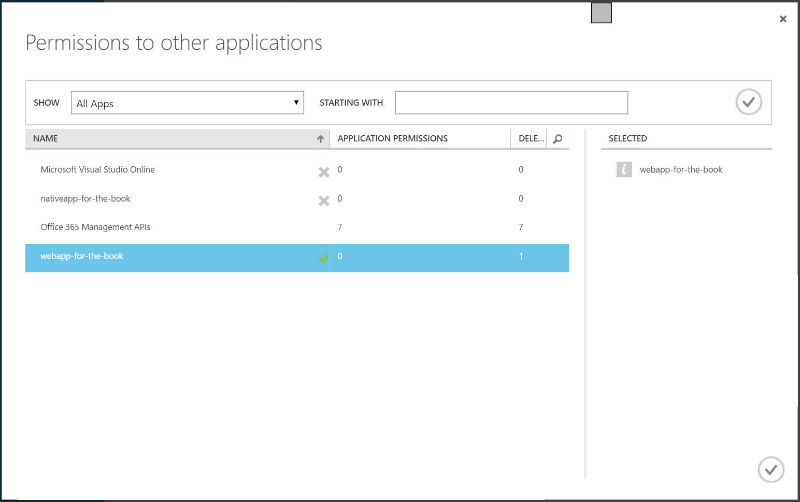
- Click on Delegated Permissions next to the web application. Check the box next to Access, then click on Save at the bottom of the screen.

At this point the application configuration will be saved.
So, what did we just do there? We created a new Azure AD app for the native application. We then gave permission for the native application to access resources that are protected by the web application. In our Azure App Service, we configured the service so that the Azure AD web application is used to protect our resources. The net effect is that our native application OR our web application can access the App Service resources that are protected via the [Authorize] attribute.
Before continuing, you will need the Client ID and the Redirect URI for the NATIVE application. You can enter these into the Helpers\Locations.cs file in the shared project:
namespace TaskList.Helpers
{
public static class Locations
{
public static readonly string AppServiceUrl = "https://the-book.azurewebsites.net";
public static readonly string AadClientId = "b61c7d68-2086-43a1-a8c9-d93c5732cc84";
public static readonly string AadRedirectUri = "https://the-book.azurewebsites.net/.auth/login/done";
public static readonly string AadAuthority = "https://login.windows.net/photoadrianoutlook.onmicrosoft.com";
}
}
The AadClientId and AadRedirectUri must match what we have configured in Azure AD for the native app. The other piece of information we need to add is the Azure AD Authority for the directory. If you click on the DOMAINS tab, it will generally tell you what domain you are in. The Authority is just a path on the https://login.windows.net that corresponds to your domain. There is also a GUID version of this domain. You can find the GUID by looking at the View Endpoints in the APPLICATIONS tab. Look at the first path section of most all the endpoints.
Add the Microsoft.IdentityModel.Clients.ActiveDirectory NuGet package using Manage NuGet Packages... to each platform project. This package contains the ADAL library as a portable class library.

Now you can add the client flow to each project. Start with the login provider in the TaskList.UWP project, located in the Services\UWPLoginProvider.cs file:
using System;
using System.Linq;
using System.Threading.Tasks;
using Microsoft.IdentityModel.Clients.ActiveDirectory;
using Microsoft.WindowsAzure.MobileServices;
using Newtonsoft.Json.Linq;
using TaskList.Abstractions;
using TaskList.Helpers;
using TaskList.UWP.Services;
[assembly: Xamarin.Forms.Dependency(typeof(UWPLoginProvider))]
namespace TaskList.UWP.Services
{
public class UWPLoginProvider : ILoginProvider
{
/// <summary>
/// Login via ADAL
/// </summary>
/// <returns>(async) token from the ADAL process</returns>
public async Task<string> LoginADALAsync()
{
Uri returnUri = new Uri(Locations.AadRedirectUri);
var authContext = new AuthenticationContext(Locations.AadAuthority);
if (authContext.TokenCache.ReadItems().Count() > 0)
{
authContext = new AuthenticationContext(authContext.TokenCache.ReadItems().First().Authority);
}
var authResult = await authContext.AcquireTokenAsync(
Locations.AppServiceUrl, /* The resource we want to access */
Locations.AadClientId, /* The Client ID of the Native App */
returnUri, /* The Return URI we configured */
new PlatformParameters(PromptBehavior.Auto, false));
return authResult.AccessToken;
}
public async Task LoginAsync(MobileServiceClient client)
{
// Client Flow
var accessToken = await LoginADALAsync();
var zumoPayload = new JObject();
zumoPayload["access_token"] = accessToken;
await client.LoginAsync("aad", zumoPayload);
// Server-Flow Version
// await client.LoginAsync("aad");
}
}
}
The LoginADALAsync() method does the actual client-flow - using the ADAL library to authenticate the user and return the access token. The LoginAsync() method initiates the client-flow. It uses the token it receives from the client-flow to log in to the App Service, by packaging the token into a JSON object. I have placed the client and server flow next to each other so you can compare the two.
In the TaskList.Droid project, we need to deal with the Context, as is common with Android libraries. The client flow in Services\DroidLoginProvider.cs is remarkably similar though:
using System;
using System.Linq;
using System.Threading.Tasks;
using Android.App;
using Android.Content;
using Microsoft.IdentityModel.Clients.ActiveDirectory;
using Microsoft.WindowsAzure.MobileServices;
using Newtonsoft.Json.Linq;
using TaskList.Abstractions;
using TaskList.Droid.Services;
using TaskList.Helpers;
[assembly: Xamarin.Forms.Dependency(typeof(DroidLoginProvider))]
namespace TaskList.Droid.Services
{
public class DroidLoginProvider : ILoginProvider
{
Context context;
public void Init(Context context)
{
this.context = context;
}
/// <summary>
/// Login via ADAL
/// </summary>
/// <returns>(async) token from the ADAL process</returns>
public async Task<string> LoginADALAsync()
{
Uri returnUri = new Uri(Locations.AadRedirectUri);
var authContext = new AuthenticationContext(Locations.AadAuthority);
if (authContext.TokenCache.ReadItems().Count() > 0)
{
authContext = new AuthenticationContext(authContext.TokenCache.ReadItems().First().Authority);
}
var authResult = await authContext.AcquireTokenAsync(
Locations.AppServiceUrl, /* The resource we want to access */
Locations.AadClientId, /* The Client ID of the Native App */
returnUri, /* The Return URI we configured */
new PlatformParameters((Activity)context));
return authResult.AccessToken;
}
public async Task LoginAsync(MobileServiceClient client)
{
// Client Flow
var accessToken = await LoginADALAsync();
var zumoPayload = new JObject();
zumoPayload["access_token"] = accessToken;
await client.LoginAsync("aad", zumoPayload);
// Server-Flow Version
// await client.LoginAsync(context, "aad");
}
}
}
The only real difference between this one and the Universal Windows edition is the PlatformParameters. We need to pass in the context of the MainActivity (which is passed in through the Init() call). However, we must also handle the response from the ADAL library. This is done in MainActivity.cs. Add the following method to the MainActivity class:
protected override void OnActivityResult(int requestCode, Result resultCode, Intent data)
{
base.OnActivityResult(requestCode, resultCode, data);
AuthenticationAgentContinuationHelper.SetAuthenticationAgentContinuationEventArgs(requestCode, resultCode, data);
}
Finally, the iOS version also requires access to the root view, so its PlatformParameters are also slightly different. Here is Services\iOSLoginProvider.cs:
using System;
using System.Linq;
using System.Threading.Tasks;
using Microsoft.IdentityModel.Clients.ActiveDirectory;
using Microsoft.WindowsAzure.MobileServices;
using Newtonsoft.Json.Linq;
using TaskList.Abstractions;
using TaskList.Helpers;
using TaskList.iOS.Services;
using UIKit;
[assembly: Xamarin.Forms.Dependency(typeof(iOSLoginProvider))]
namespace TaskList.iOS.Services
{
public class iOSLoginProvider : ILoginProvider
{
/// <summary>
/// Login via ADAL
/// </summary>
/// <returns>(async) token from the ADAL process</returns>
public async Task<string> LoginADALAsync(UIViewController view)
{
Uri returnUri = new Uri(Locations.AadRedirectUri);
var authContext = new AuthenticationContext(Locations.AadAuthority);
if (authContext.TokenCache.ReadItems().Count() > 0)
{
authContext = new AuthenticationContext(authContext.TokenCache.ReadItems().First().Authority);
}
var authResult = await authContext.AcquireTokenAsync(
Locations.AppServiceUrl, /* The resource we want to access */
Locations.AadClientId, /* The Client ID of the Native App */
returnUri, /* The Return URI we configured */
new PlatformParameters(view));
return authResult.AccessToken;
}
public async Task LoginAsync(MobileServiceClient client)
{
var rootView = UIApplication.SharedApplication.KeyWindow.RootViewController;
// Client Flow
var accessToken = await LoginADALAsync(rootView);
var zumoPayload = new JObject();
zumoPayload["access_token"] = accessToken;
await client.LoginAsync("aad", zumoPayload);
// Server Flow
//await client.LoginAsync(rootView, "aad");
}
}
}
Note that we can balance the needs of each platform by using the dependency service. The code that is unique to the platform is minimized and stored with the platform.
If you aren't interested in social authentication (Facebook, Google, Microsoft or Twitter authentication providers), you can skip the social-auth section.
Social Authentication
Azure App Service provides built-in support for Facebook, Google, Microsoft and Twitter. Irrespective of whether you intend to use server-flow or client-flow, you will need to configure the Azure App Service Authentication / Authorization service. The method is pretty similar in each case:
- Obtain a Developer Account for the provider.
- Create a new application, obtaining a Client ID and Secret.
- Turn on Azure App Service Authentication.
- Enter the Client ID and Secret into the specific provider setup.
- Save the configuration.
Before you start any of this, create a new Azure Mobile Apps as we described in [Chapter 1][int-intro]. If you want a site to deploy for the configuration, the Backend project in the Chapter2 solution is pre-configured for authorization. You just need to deploy it to Azure App Service.
Facebook Authentication
I am going to assume you have a Facebook account already. If you do not have a Facebook account, go to Facebook and sign up. All your friends are likely there already! Now log in to the Facebook Developers web site. Create a new Facebook application:

Note: Facebook updates the look and feel of their developer site on a regular basis. As a result, the screen shots I have provided here may be different. If in doubt, follow the bullet descriptions to find your way.
If you are not already registered, click on the drop-down in the top-right corner and Register as a Developer before continuing.
- Click on the My Apps link in the top right corner of the screen.
- Click on Create a New App.
- Fill in the form:

-
If required, verify your account according to the instructions. This usually involves adding a credit card number or verifying your mobile phone number.
-
Click on the Get Started button next to Facebook Login.

- Enter your application URL +
/.auth/login/facebook/callbackin the Valid OAuth redirect URIs.

- Click on Save Changes.
- Click on the Settings -> Basic in the left hand side-bar.
- Click on the Show button next to the App Secret
Now that you have the App ID and App Secret, you can continue configuration of your app within the Azure Portal.
- Open up your App Service by clicking on All Resources or App Services followed by the name of your app service.
- In the Settings blade, click on Authentication / Authorization which is under Features.
- Turn App Service Authentication to On.
- In the Action to take when request is not authenticated, select Allow Request (no action).
It is very tempting to choose Log in with Facebook. However, you need to avoid this. Selecting this option will mean that all requests need to be authenticated and you will not get the information about the identity on the back end. Selecting Allow Request means your app is in charge of what gets authenticated and what does not require authentication.
- Click on Facebook (which should show Not Configured).
- Cut and Paste the App ID and App Secret into the boxes provided.
- Select public_profile and email for Scopes.
Note that if you request anything but public_profile, user_friends, and email, your app will need further review by Facebook, which will take time. This process is not worth it for test apps like this one.
- Click on OK (at the bottom of the blade) to close the Facebook configuration blade.
- Click on Save (at the top of the blade) to save your Authentication changes.
You can test your authentication process by browsing to https://yoursite.azurewebsites.net/.auth/login/facebook; this is the same endpoint that the Azure Mobile Apps Client SDK calls when it is time to integrate authentication into the mobile client.

If you are not logged in to facebook already, you will be prompted for your facebook credentials first. Finally, here is your happy page - the page that signifies you have done everything right:
Minimal Permissions Every single OAuth provider will ask you what sort of information you want to have access to. These "claims" translate into permissions. The more permissions you request, the less likely the user is going to accept them. Be a good net citizen and only request the information you are actually going to use.
Google Authentication
It should be no shock that you need a Google Account to get started. If you do not have one already (or you want a different account for your development activities), create a new account now. Then log in to the Google Developer Portal. Click on the Create Project link at the top:
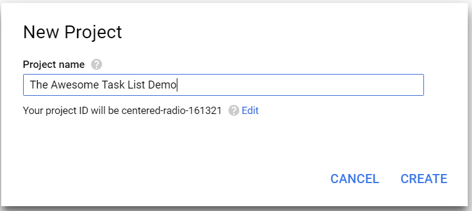
Enter a nice name (like mine) and click on Create. The screen will show the progress and eventually the project will be listed in the All Projects list. It takes about 30 seconds to create a project. Once you have your Google project, click on it to see all the wonderful things you can add to your project:

There is no "Google Login" that can guide you here. The API you need to add is called Google+ and is listed under the Social APIs. Click on it, then click on Enable at the top of the screen.
Just because it is enabled does not mean you automatically get to use it. Click on Credentials link in the left-hand side bar. You will also see a "Go to Credentials" button at the top of the screen, but it does not take you to the same screen, so do not click it.
On the Crendetials screen, click on the OAuth consent screen tab:
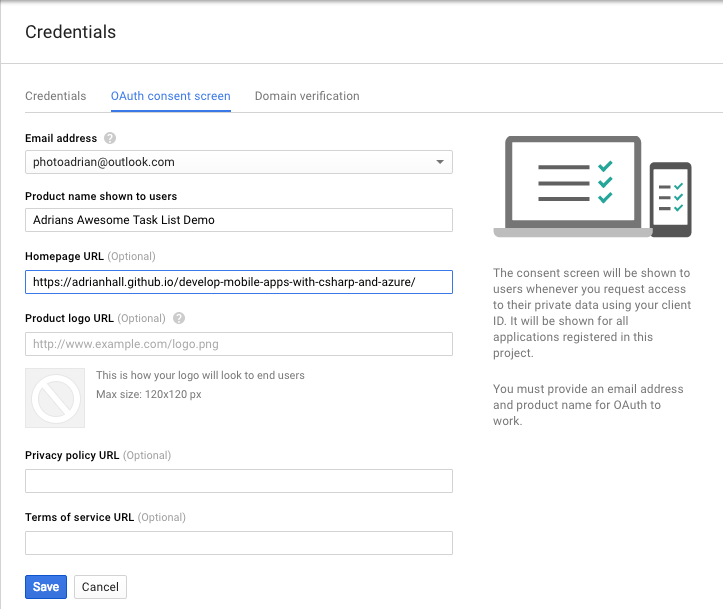
Fill in the form and click on Save. This brings up the next step - creating credentials. Click on the Create Credentials button. This pops up a drop-down menu. You want the OAuth Client ID.

The specific type of client ID you want is a Web Application. The server flow version of the application is a web-based form authentication, which matches the Web Application version of the Client ID.
When you select Web Application, you will get another form:

Enter the URL of your App Service in the Authorized JavaScript origins box, and the URL + /.auth/login/google/callback into the Authorized redirect URIs box, then click on Create.
Google is one of those providers that requires authentication redirect URIs to be secure - so ensure you use the https version of your URL.
At this point, Google will show you the Client ID and Client Secret for your app. You can also get the Client ID and Client Secret from the interface by clicking on the Credentials link on the left-hand side bar.
The process from here is practically the same as Facebook. Open your App Service within the Azure Portal, click on All Settings, then Authentication / Authorization and finally Google (assuming you have already turned on the authentication service). Cut and paste the Client ID and Client Secret into the boxes provided. Click on OK (at the bottom) followed by Save (at the top of the page).
You can define multiple providers at the same time. The code in the client determines what authentication mechanism gets used.
You can test this just like Facebook. Go to https://yoursite/.auth/login/google with your browser. You should get something like the following:
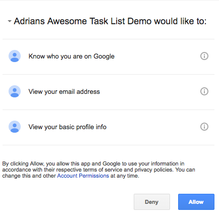
Confirming here should get us to the same happy screen we achieved with Facebook.
If you happen to mis-type the Authorized redirect URI, Google will tell you that the URI is wrong. I inevitably swap http for https. When this happens, it is an easy fix, but you have to wait a few minutes before the authentication system updates itself.
Microsoft Account Authentication
The advantage of the Microsoft Account (or MSA, as it is known) is that you already have an account - you need one for Azure. So this is the first time I am not going to explicitly tell you to sign up for an account.
Your first step is to go to the Microsoft Account Developer Center and log on with your Microsoft account. You should use the same one as you use for Azure, but it is not required.

Just to confuse us, there are two Add an App buttons. Strangely, they are different. Click on the one next to My applications.

Enter an awesome name and click on Create application.

Click on Add Platform, followed by Web. In the Redirect URIs, enter your app URL + /.auth/login/microsoftaccount/callback. Then click on Save.
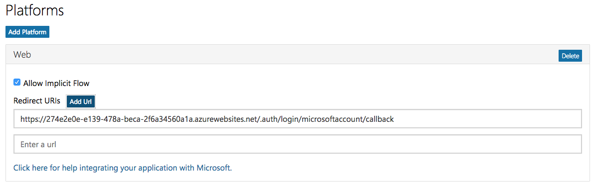
Now click on Generate New Password under Application Secrets.
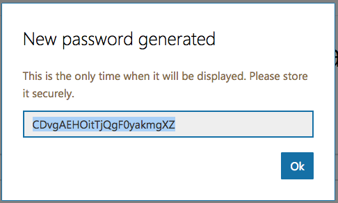
Unlike the other social providers, this is the only time you will get to see your client secret, so make a note of it or cut and paste it into a notepad. Once you have it copied somewhere, click on OK, followed by Save.
You now have all the information you need to configure the Microsoft Account section within your App Server Authentication / Authorization. The Client ID you need to enter is the Application ID and the Client Secret is the password you just copied somewhere.

Note that you have to choose claims that you want to read. The wl.basic and wl.emails will give you enough information to get started with this tutorial.
Click on OK (at the bottom), followed by Save (at the top). You can test the settings by pointing your browser to https://yoursite.azurewebsites.net/.auth/login/microsoftaccount. You will see what should be a normal claims request page:
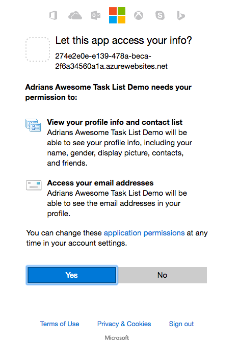
Clicking on Yes should take you to the normal success page.
Twitter Authentication
I hope you are seeing that all the OAuth providers take a very similar route to configuring their service. The semantics of the service are slightly different in each case. Twitter is no different. As you might expect, before continuing, sign up for Twitter. Once you have signed up, the Twitter Developers Portal is your next stop. Once there, you can click on Create New App:

Most of the fields are self-explanatory. The Callback URL is the same thing that the other social providers have called the Redirect URL. The appropriate value is your app URL + /.auth/login/twitter/callback. There is a legal agreement at the bottom of the page, then you can click on Create your Twitter application button.
All social authentication providers have some sort of legal agreement that governs their use. In general, demo or PoC apps are fair use. However, you should get a legal opinion before using a social authentication provider in a production app.
Once you have created the app, you will get a tabbed display with all the settings. Click on the Keys and Access Tokens tab:

Note the values for the Consumer Key (API Key) and Consumer Secret (API Secret). They get entered into the Azure Portal.
There is a check box in the Settings tab that says Allow this application to be used to Sign in with Twitter. At the time of writing, this is checked by default. However, if you find you can not log in for some reason, then ensure this checkbox is checked.
Back in the Azure Portal, select your app service, then All Settings, Authentication / Authorization, and finally Twitter (assuming you have already turned Authentication on). You can now cut and paste the Consumer Key and Consumer Secret into the appropriate boxes, before clicking on OK (at the bottom) followed by Save (at the top).
As with the other providers, you should test the authentication flow by pointing your browser to https://yoursite.azurewebsites.net/.auth/login/twitter.

Clicking on Authorize app should show you our normal successful authentication screen.
The social authentication providers should now all be configured to handle a web-based or server-flow authentication request. There are times when configuring a client-flow authentication is different. We will point those out when we get to them.
I'm going to assume you have [returned to the Concepts page][int-concepts] and added the client code for a server flow before continuing.
Client-Flow for Social Providers
In each of the social providers, the identity provider SDK (provided by Facebook, Google, or Twitter) will need to be integrated. In general, these SDKs are provided for a native platform (Objective-C or Swift for iOS, Java for Android), use callbacks or delegates (as is common practice in native libraries) and are thus more complicated to integrate with your mobile client than those that have a C#/.NET SDK delivered on NuGet.
The reward for doing so are a more integrated experience on mobile devices. For example, if you integrate the Google Play Services SDK in an Android app, the app will seamlessly authenticate itself with the connected Google account in the background, avoiding the need for repeatedly authenticating the client. It may ask for a fingerprint instead if the app is not trusted. If you integrate the Facebook SDK, then the app will automatically switch to the Facebook app and ask you to approve the authentication request there instead of authenticating the user through a web view. Both of these provide a more integrated experience for the end user, so this work is well worth pursuing.
As an example, here is an implementation of the Facebook authentication using client flow. I've implemented this using the Xamarin.Facebook.iOS library, which can be downloaded and installed into the iOS project from NuGet. The Services\iOSLoginProvider.cs contains the following:
#region Facebook Client Flow
private TaskCompletionSource<string> fbtcs;
public async Task<string> LoginFacebookAsync()
{
fbtcs = new TaskCompletionSource<string>();
var loginManager = new LoginManager();
loginManager.LogInWithReadPermissions(new[] { "public_profile" }, RootView, LoginTokenHandler);
return await fbtcs.Task;
}
private void LoginTokenHandler(LoginManagerLoginResult loginResult, NSError error)
{
if (loginResult.Token != null)
{
fbtcs.TrySetResult(loginResult.Token.TokenString);
}
else
{
fbtcs.TrySetException(new Exception("Facebook Client Flow Login Failed"));
}
}
#endregion
Note the use of a TaskCompletionSource<>() here. This is used often to convert callback APIs into awaitable APIs. We set off the async call with the callback, then await on the completion (which is signified by the TaskCompletionSource). When the callback is called, it sets the value of the TaskCompletionSource (or causes an exception) and that causes the task to complete.
The LoginAsync() method can now be updated like this:
public async Task LoginAsync(MobileServiceClient client)
{
var accessToken = await LoginFacebookAsync();
var zumoPayload = new JObject();
zumoPayload["access_token"] = accessToken;
await client.LoginAsync("facebook", zumoPayload);
}
public UIViewController RootView => UIApplication.SharedApplication.KeyWindow.RootViewController;
With this version, clicking on the login button will seamlessly switch into the Facebook application and ask the user to confirm the request, before switching back authenticated.
What is in a JWT
At this point you will have the "Authentication Success" screen - perhaps several times. If you bring up the Developer Tools for your browser, you can take a look at the token that is being minted for the authentication session. Take a look at the URL on the "successful authentication" page.

The authentication token is clearly marked (after you strip away the URL encoding). You can use a URL Decoder / Encoder - just cut and paste the entire URL into the box and click on Decode. Note that the token is actually a JSON object. You can now easily extract the authenticationToken field from the JSON object.

Technically, the authentication token is a JSON Web Token. This is a mechanism for transferring claims between two systems securely. The JWT is a cryptographically signed JSON object. You can decode the JWT using the jwt.io tool. Cut and paste the authentication token into the Encoded box and it will be decoded.

Note that the contents of the JWT are revealed even without knowing the secret. However, we have not supplied a secret. The secret is kept at the resource - in this case, your app service. However, we can already see the issuer and audience (in this case, they are both set to your app service address), the identity provider that was used and a subject.
Technically, the JWT can include any data and there are some that place just about everything about the user in the JWT. App Service keeps the amount of data small because the client will be sending the JWT with every request. Imagine adding a few kilobytes to every single request that the client makes. The bandwidth usage will add up quickly, and your app will be known as a bandwidth hog.
However, there are some fields that are pretty universal. Your JWT should always have the following fields:
- sub = Subject (the identifier for the token)
- exp = Expiry (when the token expires)
- nbf = Not Before (the earliest point in time the token is valid)
- iss = Issuer (the site that issued the token)
- aud = Audience (who is the token for)
The timestamps (exp and nbf) are all UNIX timestamps (i.e. the number of seconds since January 1, 1970).
App Service adds to this:
- stable_sid = Security Id of the user
- idp = the IdP that was used in the authentication request
- ver = the Version of the token
App Service will be able to validate any token provided to it when presented in an X-ZUMO-AUTH header. If you are using Azure Active Directory, you can also use the more standard Bearer Authorization header. If the token does not match, then the X-ZUMO-AUTH header will be stripped from the request before the request is passed to your site.
Testing Authentication without a Client
Testing your site without a client requires a REST client. I use Postman, which is based on Google Chrome. If you use Firefox, you might want to take a look at RESTClient. Telerik also distributes a web debugging proxy called Fiddler that can do API testing. To test the server, we will need a token. We can get one by testing authentication configuration by pointing the browser to /.auth/login/aad. The return URL will contain a token.
You can test any of the supported identity providers by replacing aad with the authentication provider name: facebook, google, microsoftaccount and twitter are possibilities here.
We can then do a request to /tables/todoitem to try and obtain the list of current tasks. We will need to add two headers:
ZUMO-API-VERSIONshould contain a value of2.0.0.X-ZUMO-AUTHshould contain the token you received.
My first request shows authentication failing:

Go through one of the authentication flows and copy the authentication token. In Postman, add a new header called X-ZUMO-AUTH and paste the authentication token in.

Note that we have tested all this without touching the client. Separating the backend operations from the client operations means we can be sure of where the inevitable bug that creeps in is located. We have verified that we can do each authentication flow on the server side and that the server is properly rejecting unauthenticated requests, plus it is properly returning data when authenticated requests are issued.
Developing Locally
One would normally be able to run the ASP.NET backend locally and get full functionality without authentication. However, authentication puts a stop to that because the redirect URLs, secrets and other authentication configuration settings only work with a known endpoint. To alleviate that, Azure Mobile Apps allows you to run a local server while using an authentication endpoint in Azure App Service. When the authentication transaction takes place, it is taking place against the Azure App Service. When it is not doing the OAuth transaction, however, it is operating against a local server.
Setting this up requires a little bit of local machine configuration and a change to the configuration of your client.
Update your Local Development Environment
The first step in this process is to make your local IIS development environment look more like the Azure App Service, particularly in reference to the authentication settings. This means setting up a few app settings that should be pulled from your App Service.
- Log on to the Azure Portal.
- Select your App Service from the App Services list.
- Click on Tools, then Kudu, then Go.
Kudu is the backend debug console for Azure App Service and there is a lot you can do here. Of note in this instance is that you can gain access to the keys and audience for your App Service.
- Click on Environment in the top banner.
- Click on Environment variables.
- Scroll down to the environment variables starting with WEBSITE_AUTH.
- Make a note of the WEBSITE_AUTH_SIGNING_KEY and WEBSITE_AUTH_ALLOWED_AUDIENCES values.
Add the following to your project Web.config <appSettings> section:
<appSettings>
<add key="PreserveLoginUrl" value="true" />
<add key="MS_SigningKey" value="Overridden by portal settings" />
<add key="EMA_RuntimeUrl" value="Overridden by portal settings" />
<add key="MS_NotificationHubName" value="Overridden by portal settings" />
<add key="SigningKey" value="{Your WEBSITE_AUTH_SIGNING_KEY}"/>
<add key="ValidAudience" value="{Your WEBSITE_AUTH_ALLOWED_AUDIENCES}"/>
<add key="ValidIssuer" value="https://{Your WEBSITE_HOSTNAME}/"/>
</appSettings>
NOTE: Both the ValidAudience and ValidIssuer will have a slash on the end and be a https URL.
The last three keys are the keys you will need to add. Make sure you do not have a HostName key as this is how the startup file determines if you are running locally or remote. Talking of which, edit your App_Start\Startup.MobileApp.cs file to include the following:
public static void ConfigureMobileApp(IAppBuilder app)
{
HttpConfiguration config = new HttpConfiguration();
new MobileAppConfiguration()
.AddTablesWithEntityFramework()
.ApplyTo(config);
// Use Entity Framework Code First to create database tables based on your DbContext
Database.SetInitializer(new MobileServiceInitializer());
MobileAppSettingsDictionary settings = config.GetMobileAppSettingsProvider().GetMobileAppSettings();
if (string.IsNullOrEmpty(settings.HostName))
{
app.UseAppServiceAuthentication(new AppServiceAuthenticationOptions
{
SigningKey = ConfigurationManager.AppSettings["SigningKey"],
ValidAudiences = new[] { ConfigurationManager.AppSettings["ValidAudience"] },
ValidIssuers = new[] { ConfigurationManager.AppSettings["ValidIssuer"] },
TokenHandler = config.GetAppServiceTokenHandler()
});
}
app.UseWebApi(config);
}
The UserAppServiceAuthentication() method sets up authentication checking. This section is not required when running within App Service.
If you are running the server locally, you should either set up a local SQL Server instance and put the connection string into the Web.config file, or open the firewall on your SQL Azure database so that your local development environment can connect to it, then place the connection string in the Web.config. You can get the connection string of the SQL Azure instance by looking at the Connection Strings in the Application properties of your App Service.
Update your Mobile Client
For this demonstration, I have updated the TaskList.UWP application so that it is using the server-flow authentication for Azure Active Directory. This means updating the LoginAsync() method in the Services\UWPLoginProvider.cs file to be the following:
public async Task LoginAsync(MobileServiceClient client)
{
// Server-Flow Version
await client.LoginAsync("aad");
}
This is because the default local IIS instance is IIS Express. IIS Express only listens for local connections. If you run a client from another device (for example, the Android emulator on a Hyper-V service or the iOS simulator on a Mac), then that client would be connecting via a network connection. You can still debug locally, but you need to convert your environment to IIS first.
In the TaskList (Portable) project, update the Helpers\Locations.cs file:
namespace TaskList.Helpers
{
public static class Locations
{
#if DEBUG
public static readonly string AppServiceUrl = "http://localhost:17568/";
public static readonly string AlternateLoginHost = "https://the-book.azurewebsites.net";
#else
public static readonly string AppServiceUrl = "https://the-book.azurewebsites.net";
public static readonly string AlternateLoginHost = null;
#endif
}
}
The AppServiceUrl is always set to the location of your backend. In this case, I right-clicked on the Backend project and selected Properties then Web. The correct URL for local debugging is listed in the Project URL. The AlternateLoginHost is set to the App Service when locally debugging or null if not. You can specify the DEBUG constant in the Build tab.
In the same project, update the Services\AzureCloudService.cs constructor to the following:
public AzureCloudService()
{
client = new MobileServiceClient(Locations.AppServiceUrl);
if (Locations.AlternateLoginHost != null)
client.AlternateLoginHost = new Uri(Locations.AlternateLoginHost);
}
It's a good idea to separate the client and server into different solutions. Although it doesn't hurt anything to have them in the same solution (like we have), having the client and server separated allows you to attach a debugger separately - which allows you to debug both sides of the connection at the same time.
With these settings, the client will contact the AlternateLoginHost listed for the authentication process and then contact the local server for the rest of the transaction.
Run the Local Server
Running the local server and the client takes a larger machine. You need to run two instances of Visual Studio: one for the client and one for the server. This is really where you will appreciate multiple monitors (my personal favorite) or the snap action to the sides of the screens.
Ensure you have your backend and clients in different solutions if you intend to run both client and server. The debugger in Visual Studio will stop one to run the other when they are in the same solution.
Custom authentication
For some situations, the social or enterprise flows are not valid for the mobile client. Perhaps you want the ability to provide a sign-up process with a username and password rather than using a social provider. Perhaps you want to use an alternate provider that is not one of the supported five providers. Whatever the reason, Azure App Service provides the ability to handle all situations. In this section, I will look at three methods for providing a unique set of usernames with no connection to the social or enterprise authentication.
Using an Identity Database.
Probably the most common request is to use a custom identity database. In general, this is desirable because you already have a database of usernames and password. However, it's probably the least desirable option because of the security concerns that come along with this technique. The news is rife with password leakage for very large organizations. The best way to ensure you do not disclose a users password is to not have it in the first place.
I'm not going to cover the sign-up case here. This would be an additional process and would use a regular Web API to insert data into the database after validation (and probably verification via email or text message).
The first thing we need to add to our project is a model for the user object. I created the following in the Models folder of the Backend project:
using System.ComponentModel.DataAnnotations;
namespace Backend.Models
{
public class User
{
[Key]
public int Id { get; set; }
public string Username { get; set; }
public string Password { get; set; }
}
}
We also need to modify the MobileServiceContext.cs file so that the database table is included in the Entity Framework context:
public class MobileServiceContext : DbContext
{
private const string connectionStringName = "Name=MS_TableConnectionString";
public MobileServiceContext() : base(connectionStringName)
{
}
public DbSet<TodoItem> TodoItems { get; set; }
public DbSet<User> Users { get; set; }
protected override void OnModelCreating(DbModelBuilder modelBuilder)
{
modelBuilder.Conventions.Add(
new AttributeToColumnAnnotationConvention<TableColumnAttribute, string>(
"ServiceTableColumn", (property, attributes) => attributes.Single().ColumnType.ToString()));
}
}
Finally, we probably want to put some seed data into the database when it is first created so that we can test it. Adjust the MobileServiceInitializer in the Startup.MobileApp.cs file:
protected override void Seed(MobileServiceContext context)
{
List<TodoItem> todoItems = new List<TodoItem>
{
new TodoItem { Id = Guid.NewGuid().ToString(), Text = "First item", Complete = false },
new TodoItem { Id = Guid.NewGuid().ToString(), Text = "Second item", Complete = false }
};
foreach (TodoItem todoItem in todoItems)
{
context.Set<TodoItem>().Add(todoItem);
}
List<User> users = new List<User>
{
new User { Id = 1, Username = "adrian", Password = "supersecret" }
};
foreach (User user in users)
{
context.Set<User>().Add(user);
}
base.Seed(context);
}
Note that we are storing the passwords in plain text. This is most definitely frowned upon. We should be using some sort of encryption. This code is most definitely just for demonstration purposes. Continuing the code on the backend, we need to handle the request to authenticate from the client. We will use a custom API controller for this; it is located in Controllers\CustomAuthController.cs:
using System;
using System.IdentityModel.Tokens;
using System.Linq;
using System.Security.Claims;
using System.Web.Http;
using Backend.Models;
using Microsoft.Azure.Mobile.Server.Login;
using Newtonsoft.Json;
namespace Backend.Controllers
{
[Route(".auth/login/custom")]
public class CustomAuthController : ApiController
{
private MobileServiceContext db;
private string signingKey, audience, issuer;
public CustomAuthController()
{
db = new MobileServiceContext();
signingKey = Environment.GetEnvironmentVariable("WEBSITE_AUTH_SIGNING_KEY");
var website = Environment.GetEnvironmentVariable("WEBSITE_HOSTNAME");
audience = $"https://{website}/";
issuer = $"https://{website}/";
}
[HttpPost]
public IHttpActionResult Post([FromBody] User body)
{
if (body == null || body.Username == null || body.Password == null || body.Username.Length == 0 || body.Password.Length == 0)
{
return BadRequest(); ;
}
if (!IsValidUser(body))
{
return Unauthorized();
}
var claims = new Claim[]
{
new Claim(JwtRegisteredClaimNames.Sub, body.Username)
};
JwtSecurityToken token = AppServiceLoginHandler.CreateToken(
claims, signingKey, audience, issuer, TimeSpan.FromDays(30));
return Ok(new LoginResult()
{
AuthenticationToken = token.RawData,
User = new LoginResultUser { UserId = body.Username }
});
}
protected override void Dispose(bool disposing)
{
if (disposing)
{
db.Dispose();
}
base.Dispose(disposing);
}
private bool IsValidUser(User user)
{
return db.Users.Count(u => u.Username.Equals(user.Username) && u.Password.Equals(user.Password)) > 0;
}
}
public class LoginResult
{
[JsonProperty(PropertyName = "authenticationToken")]
public string AuthenticationToken { get; set; }
[JsonProperty(PropertyName = "user")]
public LoginResultUser User { get; set; }
}
public class LoginResultUser
{
[JsonProperty(PropertyName = "userId")]
public string UserId { get; set; }
}
}
There is a lot going on here:
- The constructor reads the signing key and other information that we need for constructing the JWT. Note that the signing key is only available if you have the Authentication / Authorization is turned on.
- The
LoginResultandLoginResultUserprovide the response to the client, when serialized by the JSON serializer. - The
Post()method is where the work happens. It verifies that you have a valid object, then checks that the username and password match something in the user database. It then constructs the JWT and returns the required JSON object. - The
IsValidUser()method actually validates the username and password provided in the request with the users in the database. This version is very simplistic. I expect your version to at least include encryption of the password.
Note that you must turn on Authentication / Authorization in your App Service. Set the Action to take when request is not authenticated to Allow Request (no action) and do not configure any of the supported authentication providers.
Next, we need to wire the custom authentication controller so that it appears in the same place as all the other authenticators. We are going to access it via the /.auth/login/custom endpoint. The normal ASP.NET methods can be applied for this. In this project, we can enable attribute routing:
public static void ConfigureMobileApp(IAppBuilder app)
{
HttpConfiguration config = new HttpConfiguration();
new MobileAppConfiguration()
.AddTablesWithEntityFramework()
.ApplyTo(config);
// Map routes by attribute
config.MapHttpAttributeRoutes();
// Use Entity Framework Code First to create database tables based on your DbContext
Database.SetInitializer(new MobileServiceInitializer());
MobileAppSettingsDictionary settings = config.GetMobileAppSettingsProvider().GetMobileAppSettings();
if (string.IsNullOrEmpty(settings.HostName))
{
app.UseAppServiceAuthentication(new AppServiceAuthenticationOptions
{
SigningKey = ConfigurationManager.AppSettings["SigningKey"],
ValidAudiences = new[] { ConfigurationManager.AppSettings["ValidAudience"] },
ValidIssuers = new[] { ConfigurationManager.AppSettings["ValidIssuer"] },
TokenHandler = config.GetAppServiceTokenHandler()
});
}
app.UseWebApi(config);
}
At this point, we can deploy the backend to the App Service and send a suitably formed POST request to the backend. I use Postman for this purpose. The request:

A successful POST will return the token and user ID in the response:

Any other request (such as no body or a wrong username or password) should produce the right response. If the body is correct, but the information is wrong, then a 401 Unauthorized response should be produced. If the body is invalid, then a 400 Bad Request should be produced.
Note that the format of the response is exactly the same as the token response we saw earlier when we were discussing the contents of a JWT.
We can now turn our attention to the mobile client. Custom Authentication is always implemented using a client-flow mechanism. To implement this, we are going to adjust the entry page so that the username and password fields are displayed. The gathered username and password will then be passed to a new ICloudService LoginAsync() method. All of the UI work is done in the shared project.
To start, we need a copy of the User.cs model from the backend project. Unlike Data Transfer Objects, this model is the same:
namespace TaskList.Models
{
public class User
{
public string Username { get; set; }
public string Password { get; set; }
}
}
The abstraction we use for the cloud service needs to be adjusted so that we can pass the user object into the login method. This is the Abstractions\ICloudService.cs interface:
using System.Threading.Tasks;
using TaskList.Models;
namespace TaskList.Abstractions
{
public interface ICloudService
{
ICloudTable<T> GetTable<T>() where T : TableData;
Task LoginAsync();
Task LoginAsync(User user);
}
}
Note that I am adding a new version of the LoginAsync() method. The concrete version of this method no longer has to go through the dependency service since I can use shared code. Here is the definition of our new LoginAsync() method in Services\AzureCloudService.cs:
public Task LoginAsync(User user)
{
return client.LoginAsync("custom", JObject.FromObject(user));
}
Finally, we need to update the view-model ViewModels\EntryPageViewModel.cs so that we can store the username and password in the model. We will also update the call to the LoginAsync() method of the cloud service so it calls our new method:
using System;
using System.Diagnostics;
using System.Threading.Tasks;
using TaskList.Abstractions;
using TaskList.Helpers;
using TaskList.Models;
using Xamarin.Forms;
namespace TaskList.ViewModels
{
public class EntryPageViewModel : BaseViewModel
{
public EntryPageViewModel()
{
Title = "Task List";
User = new Models.User { Username = "", Password = "" };
}
Command loginCmd;
public Command LoginCommand => loginCmd ?? (loginCmd = new Command(async () => await ExecuteLoginCommand()));
public Models.User User { get; set; }
async Task ExecuteLoginCommand()
{
if (IsBusy)
return;
IsBusy = true;
try
{
var cloudService = ServiceLocator.Instance.Resolve<ICloudService>();
await cloudService.LoginAsync(User);
Application.Current.MainPage = new NavigationPage(new Pages.TaskList());
}
catch (Exception ex)
{
Debug.WriteLine($"[ExecuteLoginCommand] Error = {ex.Message}");
}
finally
{
IsBusy = false;
}
}
}
}
There are three new pieces here. Firstly, we have the User property (for holding the username and password in our form). Next, the constructor initializes the user object to an empty object. Finally, the call to LoginAsync() passes the user object to the cloud service.
We also need some UI changes. Specifically, we need a couple of fields for the username and password added to the Pages\EntryPage.xaml file:
<?xml version="1.0" encoding="utf-8" ?>
<ContentPage x:Class="TaskList.Pages.EntryPage"
xmlns="http://xamarin.com/schemas/2014/forms"
xmlns:x="http://schemas.microsoft.com/winfx/2009/xaml"
Title="{Binding Title}">
<ContentPage.Content>
<StackLayout HorizontalOptions="Center"
Orientation="Vertical"
VerticalOptions="Center">
<Label Text="Username?" />
<Entry Text="{Binding User.Username}" />
<Label Text="Password?" />
<Entry IsPassword="True" Text="{Binding User.Password}" />
<Button BackgroundColor="Teal"
BorderRadius="10"
Command="{Binding LoginCommand}"
Text="Enter The App"
TextColor="White" />
</StackLayout>
</ContentPage.Content>
</ContentPage>
There is lots to complain about in this demonstration (including lack of encryption, storage of passwords, and a generally bad UI). However, it serves to demonstrate the salient points for using a (perhaps pre-existing) identity database for authentication of the users.
Using Azure Active Directory B2C
Custom authentication allows you to really customize the process, but I like to reduce the amount of code I write by using services or libraries. The whole sign-in and sign-up process is ripe for this. The code needed for building the sign-in / sign-up process is boiler-plate code. It also introduces problems that I have to deal with going forward. I have to store passwords and profile information, which introduces a security concern. I have to scale the database and ensure my app scales with it as my app gets popular. Finally, I am being fairly inflexible and causing potential privacy concerns with my users.
There are a couple of services that I can use to get around these concerns. The first is an Azure service: Azure Active Directory B2C. The B2C stands for Business to Consumer. It is a mechanism by which you can add a sign-in and sign-up flow to your application. The user can enter a username or password, or, at your option, add on support for one or more social providers. In addition, there is support for branding the sign-in process, doing email verification of sign-ups and automatic password resets via email. The Azure AD B2C sign-in / sign-up process is primarily a server-flow proecss, so we will be able to add support in our app with just one line of code.
The Minimal Setup of Azure AD B2C
Azure AD is managed from the Classic Azure Portal, so start by logging in using your Azure Subscription credentials.
- Click on the big + NEW button in the bottom left of the screen.
- Select App Services -> Active Directory -> Directory -> Custom Create.
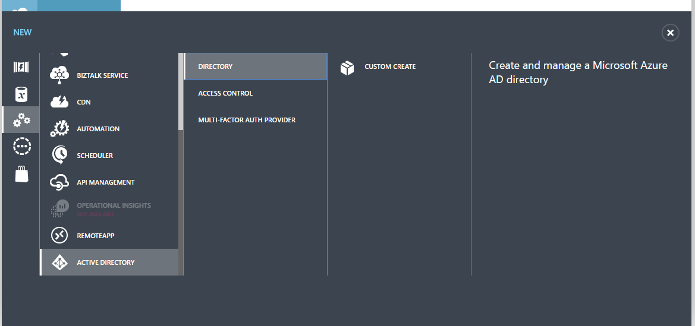
- Choose a name for the tenant, then choose a unique domain name (which will appear in the onmicrosoft.com domain) and country. Ensure you check the This is a B2C directory.

- Click on the tick to create the directory. As noted, this process will take a couple of minutes to complete.
This creates a new tenant for you to manage. If you go back to your Azure Portal and click on your name (top right corner), you will note that there is a new DIRECTORY entry for your B2C tenant. This is where you will be managing your B2C tenant.
It's a good idea to pin the B2C settings blade to your dashboard or navigation pane so you can access it faster. To do this:
- Log in to the Azure Portal.
- Switch to your B2C tenant by clicking on your name, then selecting the new tenant in the drop-down.
- The portal will probably ask you to confirm your ID and password.
- Click on Browse> in the left-hand navigation bar.
- Search for B2C.
- Click on the empty star next to Azure AD B2C.
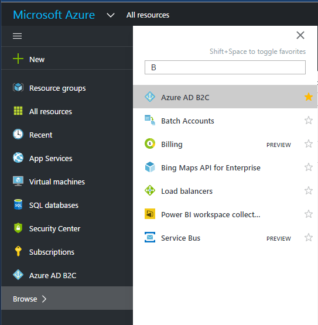
This will make Azure AD B2C appear in your left hand navigation bar. To place it on the dashboard, click on Azure AD B2C in the left hand navigation bar, then click on the pin at the top of the AZURE AD B2C SETTINGS blade.
The next job is to create an application registration within the B2C tenant:
- Open the Azure AD B2C from your dashboard or the left hand navigation.
- In the Settings blade, click on Applications.

- In the New application blade:
- Enter a unique name for the application.
- Click on Yes under Include web app / web API.
- In the Reply URL, enter
https://yoursite.azurewebsites.net/.auth/login/aad/callback. - Click on Generate key - a key will be generated (cut and paste it somewhere).

- Click on Create.
There is no spinner or deployment here. After approximately 5-10 seconds, the application registration will appear in the list. Click on the application registration to see the Application ID:

You will need the Application ID and App Key (which you copied earlier) later on. The next step is to create a Sign-in/Sign-up policy. We'll create a policy for signing up with an email address and email confirmation, then signing in with that email address:
- In the Settings blade, click on Sign-up or sign-in policies.
- Click on the + Add button.
- Give the policy a name, like emailPolicy.
- Click on Identity providers:
- Click on Email signup / Local Account (a tick will appear next to the row).
- Click on OK.
- Click on Sign-up attributes:
- Click on Email Address and any other fields you want to gather.
- Click on OK.
- Click on Application claims:
- Click on Email Addresses and any other fields you want to provide to the application.
- Click on OK
- Click on Create on the Add policy blade.
- Click on the policy you just created. It will be named something like B2C_1_emailPolicy. Make a note of the Metadata Endpoint for this policy.

Now that your B2C tenant is configured, you can switch back to your original tenant (by clicking on your name in the top-right corner and selecting the default directory).
To configure the App Service Authentication / Authorization. Open up the Settings blade, then Authentication / Authorization. Ensure the authentication service is turned on. Click on Azure Active Directory. This time, we are going to select the Advanced option. The Client ID is the application ID of your B2C application registration, and the Issuer Url is the Metadata Endpoint for your sign-up policy:

Click on OK to configure the authentication server flow, the Save to save the settings. As before, you can test your server flow by pointing your browser to https://yoursite.azurewebsites.net/.auth/login/aad:

If you have done everything right, you should be able to register an account, get the email verification code, and finally log in to get the happy login page.

All that is left to do is to configure your app for Azure Active Directory Server Flow. We did that earlier when discussing the Enterprise Authentication flow for the mobile client.
Drawbacks of Azure Active Directory B2C
Azure AD B2C is great for storing your users passwords and doing the sign-up and sign-in process for you. There are a couple of reasons why you wouldn't want to use Azure Active Directory B2C.
The most obvious one is that this is a server-flow capability. That means you won't be able to, for example, integrate the Facebook, Google and Twitter identity providers by utilizing their client libraries. You also do not get access to the underlying identity provider token, so you are restricted from accessing the Graph API for the individual providers. Finally, since the AAD B2C identity provider is configured with the AAD provider, you can't use both a B2C provider and a regular AAD provider.
If you just want a sign-up / sign-in flow, then AAD B2C is probably the best way to go. If, however, your plans include integration with other social identity providers, you should consider whether you want to do more work on the client to support that.
Using Third Party Tokens
The final method of authenticating a user we are going to look at is a process by which you use a third party authentication token. For example, you may want to authenticate via GitHub or miiCard or using an authentication provider like Auth0 to get some single sign-in capabilities.
Authentication with third party tokens works remarkably similar to the custom authentication case. Instead of a username and password, you pass in the token from the other provider.
To look at this in example form, we are going to implement Auth0 as a provider. Your first stop should be the Auth0 web site to sign up for a developer account. Once you have done that:
- Click on the + NEW CLIENT button in the Dashboard.
- Give your app a name, then click on Native and then CREATE.

- Click on the Xamarin icon to get the Xamarin Quickstart.
- Click on Settings.
- Enter the callback URL in the Allowed Callback URLs. The callback URL will be something like
https://_youraccount_.auth0.com/mobileand will be listed in the Quickstart page. - Scroll down to the bottom of the page and click on SAVE CHANGES.
- Make a note of the Client ID of the application. You will need it later.
- Click on Connections.
- Turn on any connections that you want to use. For this example, ensure you turn on the Username-Password-Authentication and a couple of social providers.
Now that the Auth0 service is configured, we can turn our attention to the mobile client. The Xamarin.Auth0Client is a component, so right-click on the Components node of a platform project and select Get More Components.... In the dialog, find the Auth0 SDK, then click on Add to App.
For our iOS application, we are going to integrate Auth0 into the Services\iOSLoginProvider.cs:
public async Task LoginAsync(MobileServiceClient client)
{
// Client Flow
var accessToken = await LoginAuth0Async();
var zumoPayload = new JObject();
zumoPayload["access_token"] = accessToken;
await client.LoginAsync("auth0", zumoPayload);
}
public UIViewController RootView => UIApplication.SharedApplication.KeyWindow.RootViewController;
public async Task<string> LoginAuth0Async()
{
var auth0 = new Auth0.SDK.Auth0Client(
"shellmonger.auth0.com",
"lmFp5jXnwPpD9lQIYwgwwPmFeofuLpYq");
var user = await auth0.LoginAsync(RootView, scope: "openid email");
return user.Auth0AccessToken;
}
The parameters for the constructor to the Auth0Client are your Auth0 domain and client ID. You can retrieve these from the Auth0 management page for your app. Note that I am requesting the email address. This will become a part of my ZUMO token when I create it.
Switching our attention to our Backend project, we need a new custom authentication controller. This is located in Controllers\Auth0Controller.cs:
using System;
using System.Diagnostics;
using System.IdentityModel.Tokens;
using System.Linq;
using System.Security.Claims;
using System.Web.Http;
using Backend.Models;
using Microsoft.Azure.Mobile.Server.Login;
namespace Backend.Controllers
{
[Route(".auth/login/auth0")]
public class Auth0Controller : ApiController
{
private JwtSecurityTokenHandler tokenHandler;
private string clientID, domain;
private string signingKey, audience, issuer;
public Auth0Controller()
{
// Information for the incoming Auth0 Token
domain = Environment.GetEnvironmentVariable("AUTH0_DOMAIN");
clientID = Environment.GetEnvironmentVariable("AUTH0_CLIENTID");
// Information for the outgoing ZUMO Token
signingKey = Environment.GetEnvironmentVariable("WEBSITE_AUTH_SIGNING_KEY");
var website = Environment.GetEnvironmentVariable("WEBSITE_HOSTNAME");
audience = $"https://{website}/";
issuer = $"https://{website}/";
// Token Handler
tokenHandler = new JwtSecurityTokenHandler();
}
[HttpPost]
public IHttpActionResult Post([FromBody] Auth0User body)
{
if (body == null || body.access_token == null || body.access_token.Length == 0)
{
return BadRequest();
}
try
{
var token = (JwtSecurityToken)tokenHandler.ReadToken(body.access_token);
if (!IsValidUser(token))
{
return Unauthorized();
}
var subject = token.Claims.FirstOrDefault(c => c.Type.Equals("sub"))?.Value;
var email = token.Claims.FirstOrDefault(c => c.Type.Equals("email"))?.Value;
if (subject == null || email == null)
{
return BadRequest();
}
var claims = new Claim[]
{
new Claim(JwtRegisteredClaimNames.Sub, subject),
new Claim(JwtRegisteredClaimNames.Email, email)
};
JwtSecurityToken zumoToken = AppServiceLoginHandler.CreateToken(
claims, signingKey, audience, issuer, TimeSpan.FromDays(30));
return Ok(new LoginResult()
{
AuthenticationToken = zumoToken.RawData,
User = new LoginResultUser { UserId = email }
});
}
catch (Exception ex)
{
Debug.WriteLine($"Auth0 JWT Exception = {ex.Message}");
throw ex;
}
}
private bool IsValidUser(JwtSecurityToken token)
{
if (token == null)
return false;
var audience = token.Audiences.FirstOrDefault();
if (!audience.Equals(clientID))
return false;
if (!token.Issuer.Equals($"https://{domain}/"))
return false;
if (token.ValidTo.AddMinutes(5) < DateTime.Now)
return false;
return true;
}
}
public class Auth0User
{
public string access_token { get; set; }
}
}
Note that we are reading two new environment variables. In the Azure App Service, you can read Application Settings by reading the environment variable of the same name. We need to set the AUTH0_CLIENTID to the Client ID of our Auth0 application, and the AUTH0_DOMAIN to the domain of our account. Both of these values need to match the settings in the client. These are not "secure items". If using the client secret (to validate the token), then that would be considered secure and should only appear on the server side.
The validation is that the token passed in is valid (i.e. it has the right audience, issuer and expiry times). In addition, you should check the validity of the token signature. You can do this by acquiring the token secret and using tokenHandler.ValidateToken() instead of tokenHandler.ReadToken(). My new token lasts for 30 days. The ZUMO token that is generated in custom authentication does not have to be the same length as the original token. You can make it last for as long as you like.
Claims and Authorization
Now that we have covered all the techniques for authentication, it's time to look at authorization. While authentication looked at verifying that a user is who they say they are, authorization looks at if a user is allowed to do a specific operation.
Authorization is handled within the server-side project by the [Authorize] attribute. Our Azure Mobile Apps backend is leveraging this to provide authorization based on whether a user is authenticated or not. The Authorize attribute can also check to see if a user is in a list of users or roles. However, there is a problem with this. The user id is not guessable and we have no roles. To see what I mean, run the Backend project locally and set a break point on the GetAllTodoItems() method in the TodoItemController, then run your server and your UWP application.
Once you have built and deployed the UWP application, it will appear in your normal Application list. This allows you to run the application and the server at the same time on the same machine.
Once you have authenticated, you will be able to set a break point to take a look at this.User.Identity:

Note that the Name property is null. This is the property that is used when you want to authorize individual users. Expand the Claims property and then click on Results View:

The only claims are the ones in the token, and none of them match the RoleClaimType, so we can't use roles either. Clearly, we are going to have to do something else.
Obtaining User Claims
At some point you are going to need to deal with something other than the claims that are in the token passed for authentication. Fortunately, the Authentication / Authorization feature has an endpoint for that at /.auth/me:

Of course, the /.auth/me endpoint is not of any use if you cannot access it. The most use of this information is gained during authorization on the server and we will cover this use later on. However, there are reasons to pull this information on the client as well. For example, we may want to make the List View title be our name instead of "Tasks".
You can't use the /.auth/me endpoint when using custom authentication.
Since identity provider claims can be anything, they are transferred as a list within a JSON object. Before we can decode the JSON object, we need to define the models. This is done in the shared TaskList project. I've defined this in Models\AppServiceIdentity.cs.
using System.Collections.Generic;
using Newtonsoft.Json;
namespace TaskList.Models
{
public class AppServiceIdentity
{
[JsonProperty(PropertyName = "id_token")]
public string IdToken { get; set; }
[JsonProperty(PropertyName = "provider_name")]
public string ProviderName { get; set; }
[JsonProperty(PropertyName = "user_id")]
public string UserId { get; set; }
[JsonProperty(PropertyName = "user_claims")]
public List<UserClaim> UserClaims { get; set; }
}
public class UserClaim
{
[JsonProperty(PropertyName = "typ")]
public string Type { get; set; }
[JsonProperty(PropertyName = "val")]
public string Value { get; set; }
}
}
This matches the JSON format from the /.auth/me call we did earlier. This is going to be a part of the ICloudService as follows:
using System.Threading.Tasks;
using TaskList.Models;
namespace TaskList.Abstractions
{
public interface ICloudService
{
ICloudTable<T> GetTable<T>() where T : TableData;
Task LoginAsync();
Task LoginAsync(User user);
Task<AppServiceIdentity> GetIdentityAsync();
}
}
Finally, we need to actually implement the concrete version in AzureCloudService.cs:
List<AppServiceIdentity> identities = null;
public async Task<AppServiceIdentity> GetIdentityAsync()
{
if (client.CurrentUser == null || client.CurrentUser?.MobileServiceAuthenticationToken == null)
{
throw new InvalidOperationException("Not Authenticated");
}
if (identities == null)
{
identities = await client.InvokeApiAsync<List<AppServiceIdentity>>("/.auth/me");
}
if (identities.Count > 0)
return identities[0];
return null;
}
Note that there is no reason to instantiate your own HttpClient(). The Azure Mobile Apps SDK has a method for invoking custom API calls (as we shall see later on). However, if you prefix the path with a slash, it will execute a HTTP GET for any API with any authentication that is currently in force. We can leverage this to call the /.auth/me endpoint and decode the response in one line of code. Adjust the ExecuteRefreshCommand() method in the ViewModels\TaskListViewModel.cs file to take advantage of this:
async Task ExecuteRefreshCommand()
{
if (IsBusy)
return;
IsBusy = true;
try
{
var identity = await cloudService.GetIdentityAsync();
if (identity != null)
{
var name = identity.UserClaims.FirstOrDefault(c => c.Type.Equals("name")).Value;
Title = $"Tasks for {name}";
}
var list = await Table.ReadAllItemsAsync();
Items.ReplaceRange(list);
}
catch (Exception ex)
{
await Application.Current.MainPage.DisplayAlert("Items Not Loaded", ex.Message, "OK");
}
finally
{
IsBusy = false;
}
}
The return value from the GetIdentityAsync() method is the first identity. Normally, a user would only authenticate once, so this is fairly safe. The number of claims returned depends on the identity provider and could easily number in the hundreds. Even the default configuration for Azure Active Directory returns 18 claims. These are easily handled using LINQ, however. The Type property holds the type. This could be a short (common) name. It could also be a schema name, which looks more like a URI. The only way to know what claims are coming back for sure is to look at the /.auth/me result with something like Postman.
Note: If you are using Custom Authentication (e.g. username/password or a third-party token), then the
/.auth/meendpoint is not available to you. You can still produce a custom API in your backend to provide this information to your client, but you are responsible for the code - it's custom, after all!
Authorization
Now that we have covered all the techniques for authentication, it's time to look at authorization. While authentication looked at verifying that a user is who they say they are, authorization looks at if a user is allowed to do a specific operation.
Authorization is handled within the server-side project by the [Authorize] attribute. Our Azure Mobile Apps backend is leveraging this to provide authorization based on whether a user is authenticated or not. The Authorize attribute can also check to see if a user is in a list of users or roles. However, there is a problem with this. The user id is not guessable and we have no roles. To see what I mean, run the Backend project and set a break point on the GetAllTodoItems() method in the TodoItemController, then run your server and your UWP application.
Once you have built and deployed the UWP application, it will appear in your normal Application list. This allows you to run the application and the server at the same time on the same machine. Alternatively, you can attach a Debugger to your Azure App Service within Visual Studio's Cloud Explorer.
Once you have authenticated, you will be able to set a break point to take a look at this.User.Identity:
Note that the Name property is null. This is the property that is used when you want to authorize individual users. Expand the Claims property and then click on Results View:
The only claims are the ones in the token, and none of them match the RoleClaimType, so we can't use roles either. Clearly, we are going to have to do something else. Fortunately, we already know that we can get some information about the identity provider claims from the /.auth/me endpoint. To get the extra information, we need to query the User object:
var identity = await User.GetAppServiceIdentityAsync<AzureActiveDirectoryCredentials>(Request);
There is one Credentials class for each supported authentication technique - Azure Active Directory, Facebook, Google, Microsoft Account and Twitter. These are in the Microsoft.Azure.Mobile.Server.Authentication namespace. They all follow the same pattern as the model we created for the client - there are Provider, UserId and UserClaims properties. The token and any special information will be automatically decoded for you. For instance, the TenantId is pulled out of the response for Azure AD.
You can use the AccessToken property to do Graph API lookups for most providers in a custom API. We'll get into this more in a later Chapter.
Adding Group Claims to the Request
There are times when you want to add something else to the token that is returned from Azure AD. The most common requirement is to add group information to the response so you can handle group-based authorization.
To add security groups to the Azure AD token:
- Log into the Classic Portal.
- Click on your directory (probably called Default Directory) in the All Items list.
- Click on APPLICATIONS, then your WEB application.
- Click on MANAGE MANIFEST (at the bottom of the page), then Download Manifest.
- Click on Download manifest.
This will download a JSON file. Edit the file with a text editor. (I use Visual Studio Code). At the top of the file is this:
"displayName": "webapp-for-the-book",
"errorUrl": null,
"groupMembershipClaims": null,
"homepage": "https://the-book.azurewebsites.net",
"identifierUris": [
"https://the-book.azurewebsites.net"
],
"keyCredentials": [],
"knownClientApplications": [],
Change the groupMembershipClaims to "SecurityGroup":
"displayName": "webapp-for-the-book",
"errorUrl": null,
"groupMembershipClaims": "SecurityGroup",
"homepage": "https://the-book.azurewebsites.net",
"identifierUris": [
"https://the-book.azurewebsites.net"
],
"keyCredentials": [],
"knownClientApplications": [],
Save the file. You can now upload this again. Go back to the WEB application, click on MANAGE MANIFEST, then click on Upload Manifest. Select the file and click on the tick.
You can now give the web application additional permissions:
- Click on the CONFIGURE tab.
- Scroll to the bottom, click on Delegated Permissions.
- Check the box for Read directory data.

- Click on Save.
Now that you have configured the application to return groups as part of the claims, you should probably add a couple of groups:
- Click on the back-arrow (at the top left) to return to the top level of your directory.
- Click on GROUPS.
- Click on ADD GROUP.
- Fill in the information, select Security as the group type, then click on the tick.
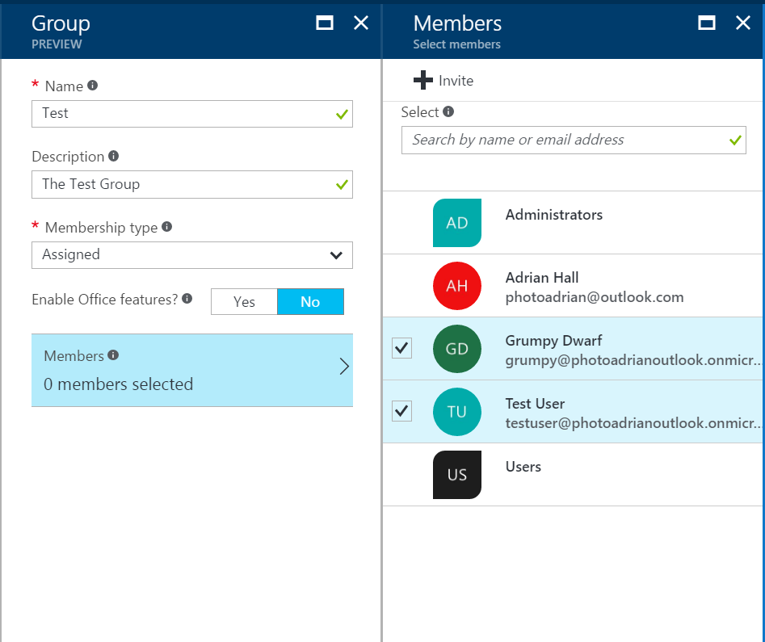
- Click on the new group, then click on PROPERTIES.
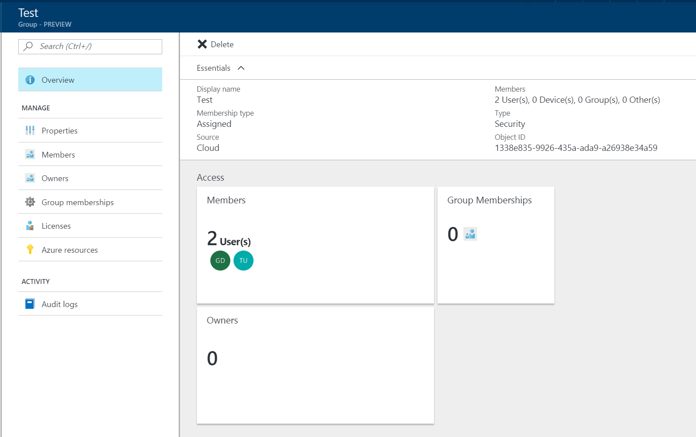
- Make a note of the OBJECT ID. The claims for groups are listed by the Object ID, so you will need this to refer to the group later.
It's a good idea to add a couple of groups for testing purposes. If you are using the organization directory, you will need to request the creation of a couple of groups for application roles. The view of the groups will be shown when we get the identity of
the user using User.GetAppServiceIdentityAsync<AzureActiveDirectoryCredentials>(Request):
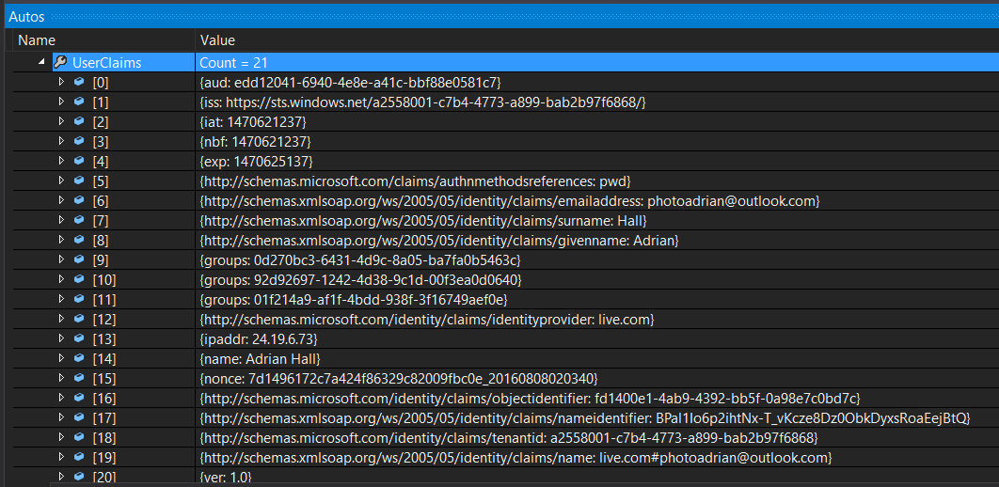
Group Authorization
Now that we have group claims in the claims list for the /.auth/me endpoint, we can move forward to do authorization based on these claims. This can be done in a relatively basic
manner by implementing a method to check the claims:
async Task<bool> IsAuthorizedAsync()
{
var identity = await User.GetAppServiceIdentityAsync<AzureActiveDirectoryCredentials>(Request);
var countofGroups = identity.UserClaims
.Where(c => c.Type.Equals("groups") && c.Value.Equals("01f214a9-af1f-4bdd-938f-3f16749aef0e"))
.Count();
return (countofGroups > 0);
}
The UserClaims object is an IEnumerable that contains objects with a Type and a Value. The Type for the group claims is groups. Once we have this knowledge, we can use a LINQ query to obtain a count of the claims that match the conditions we want to test. The Value we use is the Object ID of the group. This is available in the PROPERTIES tab of the group.
We can prevent a new record being added by adjusting the PostTodoItem() method:
public async Task<IHttpActionResult> PostTodoItem(TodoItem item)
{
if (!await IsAuthorizedAsync())
{
return Unauthorized();
}
TodoItem current = await InsertAsync(item);
return CreatedAtRoute("Tables", new { id = current.Id }, current);
}
Unfortunately, most of the table controller methods do not return an IHttpActionResult, so this has limited value. What would be better would be an [Authorize] attribute that tests the claims for us. For instance, we should be able to do the following:
[AuthorizeClaims("groups", "01f214a9-af1f-4bdd-938f-3f16749aef0e")]
public async Task<IHttpActionResult> PostTodoItem(TodoItem item)
{
TodoItem current = await InsertAsync(item);
return CreatedAtRoute("Tables", new { id = current.Id }, current);
}
The [AuthorizeClaims()] attribute does not exist, so we have to provide it ourselves:
using System.Linq;
using System.Net;
using System.Security.Principal;
using System.Threading;
using System.Threading.Tasks;
using System.Web.Http;
using System.Web.Http.Controllers;
using System.Web.Http.Filters;
using Microsoft.Azure.Mobile.Server.Authentication;
namespace Backend.Helpers
{
public class AuthorizeClaimsAttribute : AuthorizationFilterAttribute
{
string Type { get; }
string Value { get; }
public AuthorizeClaimsAttribute(string type, string value)
{
Type = type;
Value = value;
}
public override async Task OnAuthorizationAsync(HttpActionContext actionContext, CancellationToken cancellationToken)
{
var request = actionContext.Request;
var user = actionContext.RequestContext.Principal;
if (user != null)
{
var identity = await user.GetAppServiceIdentityAsync<AzureActiveDirectoryCredentials>(request);
var countOfMatchingClaims = identity.UserClaims
.Where(c => c.Type.Equals(Type) && c.Value.Equals(Value))
.Count();
if (countOfMatchingClaims > 0) return;
}
throw new HttpResponseException(HttpStatusCode.Unauthorized);
}
}
}
This is the same type of authorization filter attribute that the officially provided AuthorizeAttribute is based on. However, the AuthorizeAttribute is synchronous. We require an asynchronous version of the attribute, so we cannot use a sub-class of the AuthorizeAttribute. Aside from that note, this uses virtually the same code that we used in the IsAythorizedAsync() method we developped earlier.
We can now use this attribute for testing any claim. For example, our claims has the identity provider as a claim. We can use the following:
[AuthorizeClaims("http://schemas.microsoft.com/identity/claims/identityprovider", "live.com")]
If you want to test other claims that are not provided, you can enable the Read Directory Data permission in the Azure Active Directory permissions and do a query against the Azure Active Directory. You should think about caching results if this is the case.
Caching Tokens
You will notice that we have to log in with every start of the application. The token that is generated has a lifetime that is provided and controlled by the identity provider. Some providers have a relatively short lifetime. For example, Azure Active Directory tokens have a lifetime of 1 hour. Others are incredibly long. Facebook has an expiry time of 60 days.
Irrespective of the lifespan of the token, we will want to store it securely and re-use it when we can. Xamarin has provided a nice component, [Xamarin.Auth], that provides such as secure store in a cross-platform manner. It starts with an account store:
var accountStore = AccountStore.Create();
// For Android:
// var accountStore = AccountStore.Create(Context);
We can then store the token with the following:
accountStore.Save(account, "descriptor");
The descriptor is a string that allows us to find the token again. The account (which is an Account object) is uniquely identified by a key composed of the account's Username property and the descriptor. The Account class is provided with Xamarin.Auth. Storage is backed by the Keychain on iOS and the KeyStore on Android.
To get the token back, we use the following:
var accounts = accountStore.FindAccountsForService("descriptor");
When we receive the token back from the key store, we will want to check the expiry time to ensure the token has not expired. As a result, there is a little bit more code to caching code than one would expect.
Let's start with the Android version in TaskList.Droid. As with all the other login code, we are adjusting the LoginAsync() method in Services\DroidLoginProvider.cs:
using System;
using System.Linq;
using System.Text;
using System.Threading.Tasks;
using Android.App;
using Android.Content;
using Microsoft.IdentityModel.Clients.ActiveDirectory;
using Microsoft.WindowsAzure.MobileServices;
using Newtonsoft.Json.Linq;
using TaskList.Abstractions;
using TaskList.Droid.Services;
using TaskList.Helpers;
using Xamarin.Auth;
[assembly: Xamarin.Forms.Dependency(typeof(DroidLoginProvider))]
namespace TaskList.Droid.Services
{
public class DroidLoginProvider : ILoginProvider
{
public Context RootView { get; private set; }
public AccountStore AccountStore { get; private set; }
public void Init(Context context)
{
RootView = context;
AccountStore = AccountStore.Create(context);
}
public async Task LoginAsync(MobileServiceClient client)
{
// Check if the token is available within the key store
var accounts = AccountStore.FindAccountsForService("tasklist");
if (accounts != null)
{
foreach (var acct in accounts)
{
string token;
if (acct.Properties.TryGetValue("token", out token))
{
if (!IsTokenExpired(token))
{
client.CurrentUser = new MobileServiceUser(acct.Username);
client.CurrentUser.MobileServiceAuthenticationToken = token;
return;
}
}
}
}
// Server Flow
await client.LoginAsync(RootView, "aad");
// Store the new token within the store
var account = new Account(client.CurrentUser.UserId);
account.Properties.Add("token", client.CurrentUser.MobileServiceAuthenticationToken);
AccountStore.Save(account, "tasklist");
}
bool IsTokenExpired(string token)
{
// Get just the JWT part of the token (without the signature).
var jwt = token.Split(new Char[] { '.' })[1];
// Undo the URL encoding.
jwt = jwt.Replace('-', '+').Replace('_', '/');
switch (jwt.Length % 4)
{
case 0: break;
case 2: jwt += "=="; break;
case 3: jwt += "="; break;
default:
throw new ArgumentException("The token is not a valid Base64 string.");
}
// Convert to a JSON String
var bytes = Convert.FromBase64String(jwt);
string jsonString = UTF8Encoding.UTF8.GetString(bytes, 0, bytes.Length);
// Parse as JSON object and get the exp field value,
// which is the expiration date as a JavaScript primative date.
JObject jsonObj = JObject.Parse(jsonString);
var exp = Convert.ToDouble(jsonObj["exp"].ToString());
// Calculate the expiration by adding the exp value (in seconds) to the
// base date of 1/1/1970.
DateTime minTime = new DateTime(1970, 1, 1, 0, 0, 0, 0, DateTimeKind.Utc);
var expire = minTime.AddSeconds(exp);
return (expire < DateTime.UtcNow);
}
}
}
There are three new pieces to this code. The first piece is to check to see if there is an existing token in the KeyStore. If there is, we check the expiry time and then set up the Azure Mobile Apps client with the username and token from the KeyStore. If there isn't, we do the normal authentication process. If the authentication process is successful, we reach the second piece, which is to store the token within the KeyStore. If there is an existing entry, it will be overwritten. Finally, there is a method called IsTokenExpired() whose only job is to check to see if a token is expired or not. This same code can be used in the Services/iOSLoginProvider.cs. The only difference is in the AccountStore.Create() call (as discussed earlier).
I'm using an application specific service ID (or descriptor) for this purpose. You could also use an identity provider-based service ID which is especially useful if your mobile client supports multiple identity providers.
Xamarin.Auth only support iOS and Android. We need to turn to an alternate library for token caching on Universal Windows. The standard library has a package called PasswordVault that can be used identically to the KeyStore and Keychain libraries. Here is the Universal Windows version of the same code in Services\UWPLoginProvider.cs:
using System;
using System.Linq;
using System.Text;
using System.Threading.Tasks;
using Microsoft.IdentityModel.Clients.ActiveDirectory;
using Microsoft.WindowsAzure.MobileServices;
using Newtonsoft.Json.Linq;
using TaskList.Abstractions;
using TaskList.Helpers;
using TaskList.UWP.Services;
using Windows.Security.Credentials;
[assembly: Xamarin.Forms.Dependency(typeof(UWPLoginProvider))]
namespace TaskList.UWP.Services
{
public class UWPLoginProvider : ILoginProvider
{
public PasswordVault PasswordVault { get; private set; }
public UWPLoginProvider()
{
PasswordVault = new PasswordVault();
}
public async Task LoginAsync(MobileServiceClient client)
{
// Check if the token is available within the password vault
var acct = PasswordVault.FindAllByResource("tasklist").FirstOrDefault();
if (acct != null)
{
var token = PasswordVault.Retrieve("tasklist", acct.UserName).Password;
if (token != null && token.Length > 0 && !IsTokenExpired(token))
{
client.CurrentUser = new MobileServiceUser(acct.UserName);
client.CurrentUser.MobileServiceAuthenticationToken = token;
return;
}
}
// Server-Flow Version
await client.LoginAsync("aad");
// Store the token in the password vault
PasswordVault.Add(new PasswordCredential("tasklist",
client.CurrentUser.UserId,
client.CurrentUser.MobileServiceAuthenticationToken));
}
bool IsTokenExpired(string token)
{
/* Copy code from DroidLoginProvider */
}
}
}
The PasswordVault replaces the KeyStore (Android) and Keychain (iOS), but the concepts are the same. All three mechanisms provide the basic functionality of storing client secrets securely.
Refresh Tokens
Our token cache checks the token to see if it is expired and prompts the user if the token is no longer valid. Since the life of a token is inevitably short (maybe 1 hour), this will still mean that the user is prompted for new credentials most of the time. In addition, we have an issue when the app is running for a long time. What happens if the user leaves the app running for 2 hours? The token we received at the start of the session will be invalid halfway through the session and we will have to restart the app in order to continue. Both of these situations are undesirable from the point of view of the user. Access tokens eventually expire and we need to explicitly deal with this situation.
The first part of the solution is to request a Refresh Token. This is something the identity provider issues when the scope of the request includes an offline scope. Only certain identity providers include the ability to request refresh tokens. For server-flow:
- Google: Append the "access_type=offline" to the request.
- Microsoft Account: Select the wl.offline_access scope in the Azure management portal.
- Azure AD: Configure Azure AD to support access to the Graph API.
Facebook and Twitter do not provider refresh tokens. Once you have the refresh tokens, you can simply call the refresh API in the Azure Mobile Apps SDK to refresh the token.
Refresh Tokens are one area that require special consideration when using Custom Authentication. Just like with the /.auth/me endpoint, you are on your own when it comes to handling token expiry for custom authentication.
Configuring Refresh Tokens
Azure Active Directory is perhaps the trickiest to configure.
- Log on to the Classic Portal.
- Navigate to your Azure Active Directory.
- Go to APPLICATIONS and then your WEB application.
- Go to the CONFIGURE tab.
- Scroll down to the Keys section.

- In the Select duration drop-down, select 2 Years.
- Click on SAVE. The key will be generated for you. Copy the key (you will need it below).
- Go back to the Azure Portal.
- Go to App Services, then your App Service.
- Click on Tools, then Resource explorer, then Go.
- In the Resource Explorer, expand config and select authsettings.
- Click on Edit.
- Set the clientSecret to the key you copied from above.
- Set the additionalLoginParams to
["response_type=code id_token"].
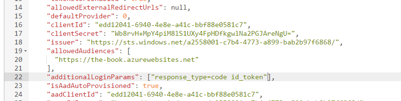
- Click the Read/Write toggle button at the top of the page.
- Click the PUT button.
The next time the user logs into our web app side, there will be a one-time prompt to consent to graph API access. Once granted, the App Service Authentication / Authorization service will start requesting and receiving refresh tokens.
Using Refresh Tokens
The Azure Mobile Apps Client SDK has a built in method for refreshing tokens for you. It assumes that you are using a supported identity provider (Azure Active Directory, Google or Microsoft Account), and have configured the identity provider to generate the refresh token.
Azure App Service Authentication / Authorization maintains a token store in the XDrive (which is the drive that is shared among all instances of the backend within the same App Service Plan). The token store is located at
D:\\home\\data\\.auth\\tokenson the backend. The tokens are encrypted and stored in a per-user encrypted file.